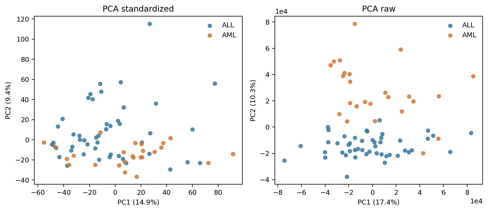
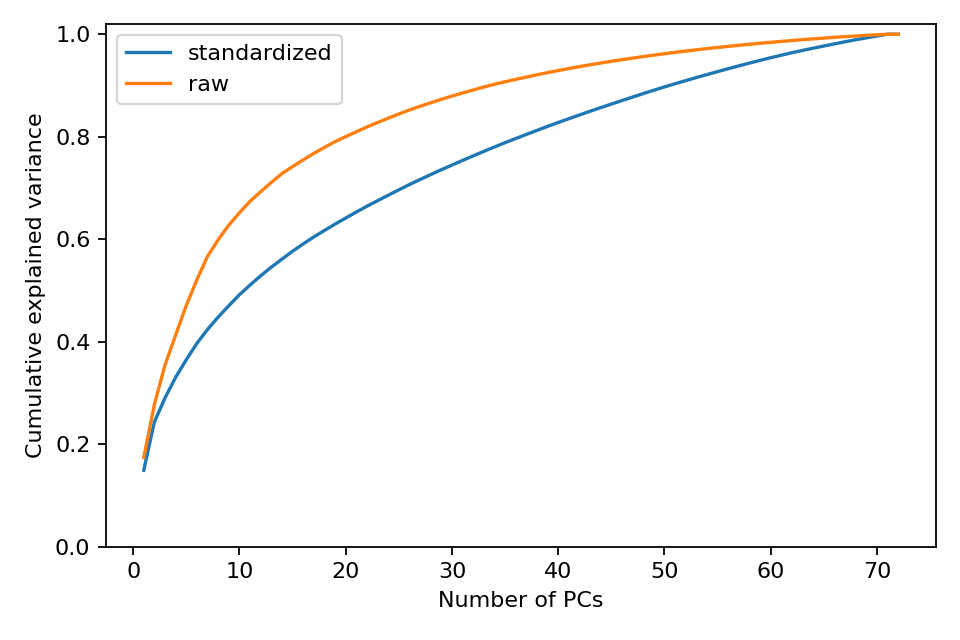
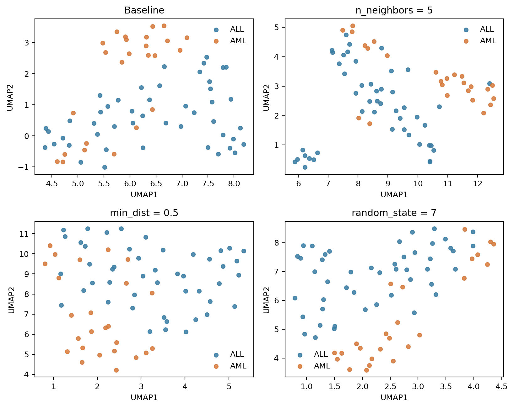

本报告使用 72 份白血病微阵列表达样本及 7,129 个探针，考察标准化、PCA 与 UMAP 在描述高维样本结构和支持后续预测时分别保留了什么信息。数据包含 47 份 ALL 和 25 份 AML；原始划分为训练集 38 份、测试集 34 份。标准化 PCA 的 PC1 和 PC2 分别解释 14.9216% 和 9.4462% 的方差，前两维合计 24.3678%，累计达到 80% 和 90% 分别需要 37 和 51 个成分。基线 UMAP 与标准化原空间的二维 5 近邻平均重合为 41.11%；改变邻居数、min_dist 或随机种子后，局部邻域会变化。训练集内三折比较中，标准化后直接使用 1 近邻的平均验证 balanced accuracy 为 0.8426，加入 PCA(10) 后为 0.7639。结果支持把二维图作为探索线索，但不能凭图证明疾病机制、真实亚型数量或新患者预测能力。
本研究围绕三个问题展开：第一，PCA 和 UMAP 把 7,129 维表达矩阵压缩到二维时，各自保留什么、隐藏什么？第二，标准化会如何改变 PCA 的主要方向？第三，二维图中的样本分离和近邻关系，在参数变化及预测验证中有多稳定？
每行代表一份白血病样本，标签为 ALL 或 AML；每个表达列对应一个探针。探针不等同于不同基因，也不保证彼此独立。教学编号 G001–G072 只能用于追踪样本，不能证明存在 72 位互不重复的患者；本数据还缺少可用于排查批次效应的字段。
实验前个人判断：________；信心（0—100）：________；最想补充的一项证据：________。这些是实验前记录，请按当时真实想法补填。
PCA（主成分分析）把多个原始探针转换为较少的综合坐标。先按列中心化；需要时再标准化为 zᵢⱼ=(xᵢⱼ−μⱼ)/sⱼ。第一主成分选择单位向量 w₁，使所有样本投影 t₁=Zw₁ 的方差最大；后续主成分与前面方向正交，并依次解释剩余方差。计算上可对中心化矩阵做奇异值分解 Z=UΣVᵀ；样本坐标由投影得到，解释率由各方向方差除以总方差得到。
UMAP（统一流形近似与投影）不直接寻找最大方差方向。它先根据高维样本距离为每个样本找近邻，形成带权的邻居关系图，再给每个样本安排二维坐标。算法迭代调整坐标，让高维中关系较强的近邻在二维中尽量靠近，同时避免所有点挤在一起。n_neighbors 影响高维邻域尺度，min_dist 影响二维点的紧密程度；随机种子可能改变初始化和最终布局。UMAP 坐标不是探针线性组合，也没有 PCA 同义的方差解释率。
两种方法的共同点是压缩表示、都可能丢失信息；区别是 PCA 优先呈现线性投影方差，UMAP 优先近似呈现局部邻域。以下按工作单任务逐项报告实验设计、结果与解释。
实验设计：依据工作单，将五种降维目标分别配对需要的输出和评价方式；再区分描述当前 72 个样本与预测未见样本两条流程。工作单列出的交叉验证比较属于可选验证，本次实际完成。
| 目标 | 需要的输出 | 如何评价是否有用 |
|---|---|---|
| 可视化 | 二维/三维样本坐标和标注图 | 能否观察、追踪关系；改变设置后主要关系是否稳健，不能只看图是否漂亮。 |
| 去噪 | 保留信号的低维表示或重建数据 | 重复测量是否更一致、真实信号是否保留，或独立下游验证是否改善；仅图更平滑不足以证明。 |
| 压缩特征 | 较少坐标及可应用的变换规则 | 权衡保留维数、解释率、重建误差、存储和计算成本。 |
| 发现样本结构 | 候选邻域、梯度或分组 | 检查跨参数、批次和独立样本的稳定性，并结合外部信息。 |
| 后续模型输入 | 训练集拟合的降维变换和下游模型 | 用无泄露交叉验证和独立测试评估预测表现与计算成本。 |
描述当前数据的流程：全部 72 个样本表达矩阵 → 在这 72 个样本拟合标准化 → PCA/UMAP 拟合并生成坐标 → 拟合完成后按诊断着色 → 描述当前样本结构。
预测新样本的流程：先锁定训练/测试划分 → 每个训练折内拟合标准化、PCA（若用）与分类器 → 用已拟合流程转换并预测验证折 → 固定方案后以训练数据重拟合 → 最后评估独立测试集。
为什么全数据 PCA 仍会泄露：PCA 不用标签，但会从输入学习均值、协方差和主成分方向；StandardScaler 也从输入学习均值和尺度。若验证折参与这些拟合，验证数据的分布信息已进入模型流程。因此预测任务须把全部拟合步骤放在 Pipeline 中并在每个训练折内拟合。
本次可选验证设计：仅使用原始 38 个训练样本，固定 StratifiedKFold(3, shuffle=True, random_state=42)，比较 StandardScaler→1近邻 与 StandardScaler→PCA(10, svd_solver="full")→1近邻，以 balanced accuracy 评价；原始 34 个测试样本未用于评分或调参。
| 验证折 | 标准化→1近邻 | 标准化→PCA(10)→1近邻 |
|---|---|---|
| 1 | 0.819444 | 0.694444 |
| 2 | 0.875000 | 0.763889 |
| 3 | 0.833333 | 0.833333 |
| 三折平均 | 0.842593 | 0.763889 |
结果解释：本次固定三折比较中，加入 PCA(10) 后平均验证 balanced accuracy 较低；这不表示 PCA 总会降低预测表现。样本量小，结果依赖当前划分和模型。balanced accuracy 是 ALL 与 AML 两类召回率的平均值，不是总正确率。两套 1 近邻模型的训练分数均为 1.0，训练满分不代表新样本泛化。
实验设计：使用全部 72 行、7,129 个探针，不纳入 sample_id、original_split、diagnosis。按列标准化并检查均值与总体标准差；对标准化矩阵做 PCA，同时对仅中心化、未除以标准差的原尺度矩阵做对照。记录解释率、累计解释率、PC1 五个最大绝对权重探针及坐标。该任务描述当前数据，不是预测评估。
预处理结果：StandardScaler 的变换是 zᵢⱼ=(xᵢⱼ−μⱼ)/σⱼ。标准化后列均值绝对值最大为 5.98×10⁻¹⁶，各列总体标准差与 1 的差的绝对值最大为 3.33×10⁻¹⁶，属于浮点误差。此按列标准化不是微阵列上游归一化；数据含负值，本课不对其直接取 log 或 log1p。
| PCA 输入 | PC1 解释率 | PC2 解释率 | 前两项合计 | 达到 80% 最少成分 | 达到 90% 最少成分 |
|---|---|---|---|---|---|
| 标准化 | 14.9216% | 9.4462% | 24.3678% | 37 | 51 |
| 原尺度，仅中心化 | 17.4278% | 10.3386% | 27.7664% | 20 | 34 |

图 1 标准化 PCA 与原尺度 PCA；轴括号为各自输入空间的解释率

图 2 两种 PCA 输入的累计解释率
图和解释率：标准化 PCA 前两维合计解释 24.3678% 的总方差；其余约 75.63% 位于 PC3 及后续方向，二维图未显示。被省略的方差不等于样本在 PC1、PC2 上完全重合；样本可在二维图上分开，同时在未显示方向上仍有差异。两种输入的总方差基准不同，不能只凭解释率更高断定某一预处理更好。
PC1 权重表：本报告将 pca.components_.T 定义为主成分方向权重（loading）；表中按 PC1 权重绝对值排序。
| 输入方案 | 探针 | PC1 带符号权重 | 原始尺度标准差 |
|---|---|---|---|
| standardized | X92518_s_at | +0.02878558 | 326.91 |
| standardized | X95190_at | -0.02817682 | 363.72 |
| standardized | X98253_at | +0.02792670 | 348.96 |
| standardized | X82895_at | +0.02787138 | 355.47 |
| standardized | Y09616_at | +0.02775694 | 531.14 |
| raw | M25079_s_at | +0.35238761 | 15782.80 |
| raw | hum_alu_at | +0.31355189 | 10806.78 |
| raw | HG1428-HT1428_s_at | +0.23486702 | 10956.53 |
| raw | L06499_at | +0.21045324 | 7625.23 |
| raw | J04617_s_at | +0.19625269 | 6846.94 |
PC1 如何计算：对样本 i，PC1 得分是全部 7,129 个输入特征的加权和：PC1ᵢ=Σⱼ wⱼzᵢⱼ。标准化 PCA 中 X92518_s_at 的权重约 +0.02878558，它只贡献总和的一项；高权重不等于致病、差异显著或分类最重要。
尺度对照解释：两种 PCA 的前五探针完全不同。原尺度前五探针的原始标准差约 6,846.94–15,782.80；标准化方案所列前五约 326.91–531.14。原尺度中的大波动特征更容易影响总方差方向；标准化让各探针以自身标准差为单位比较，但也可能相对放大低变异噪声。
概念题结果：PC1 在单位长度方向中最大化样本投影方差，不是使用 ALL/AML 标签找出的最佳分类方向，也不是单一基因。若把所有主成分权重和得分同时乘以 −1，只会翻转坐标轴符号，不改变解释率和样本几何关系。中心化后 72 个样本偏差之和为零，样本行至少有一个线性依赖关系，因此矩阵秩最多 min(72−1,7129)=71，最多有 71 个非零主成分。
一句解释 PC1：标准化 PC1 是全部探针共同构成的线性方向，解释本数据总方差的 14.9216%。
一句不能推出的结论：不能由 PC1 权重或二维图中的诊断趋势推断该探针致病、发现真实疾病机制，或保证对新患者预测准确。
实验设计：沿用任务二同一个 72×7,129 标准化矩阵，不按诊断筛选探针，拟合二维 UMAP；度量为欧氏距离，n_jobs=1。基线设 n_neighbors=15、min_dist=0.1、random_state=42，再各自只改变邻居数、min_dist 或随机种子。各次坐标均与 sample_id 对应保存，避免只挑最清楚的一张图。
| 设置 | n_neighbors | min_dist | 种子 | 原空间5近邻保留 | 与基线二维5近邻重合 |
|---|---|---|---|---|---|
| 基线 | 15 | 0.1 | 42 | 41.11% | 100.00% |
| 仅改邻居数 | 5 | 0.1 | 42 | 45.56% | 55.28% |
| 仅改 min_dist | 15 | 0.5 | 42 | 40.00% | 64.17% |
| 仅改随机种子 | 15 | 0.1 | 7 | 40.56% | 60.28% |

图 3 基线 UMAP 与三个单因素参数/随机种子对照
指标如何读：“原空间5近邻保留”是标准化 7,129 维空间与相应二维图的近邻名单平均重合；“与基线重合”是两张二维 UMAP 图的近邻名单平均重合。二者均按每个样本各取 5 个近邻、计算交集占 5 的比例后再对 72 个样本取平均。它们是本报告的描述性辅助量，不是分类准确率、UMAP 方差解释率或标准 trustworthiness 指标。
稳定邻域结果：四组二维嵌入的 5 近邻交集中，G004 的共同邻居为 G001、G007、G008、G027、G049；G008 的共同邻居为 G001、G004、G007、G027、G049。G010 的共同邻居数为 0，说明不同样本的邻域稳定程度不一。这里的稳定只针对本次四种设置。
PCA 与 UMAP 比较：下表按工作单要求概括两种方法；预测用途都必须在训练折内拟合变换。
| 比较项 | PCA | UMAP |
|---|---|---|
| 线性/非线性 | 线性投影 | 非线性嵌入 |
| 主要保留信息 | 依次最大化正交方向的投影方差；固定维数下最小化平方重建误差 | 建立高维近邻图并优化低维布局，侧重局部邻域关系 |
| 坐标轴含义 | 特征的带权线性组合，可查看权重与得分 | 嵌入坐标，没有固定的基因或生物学单位 |
| 方差解释率 | 可计算并需注明输入预处理 | 没有与 PCA 等价的 explained variance ratio |
| 局部与全局距离 | 二维只保留部分线性子空间；截断后距离仍可能失真 | 邻近关系是局部线索；远处岛屿距离、方向、面积不能直接作生物学量 |
| 参数与随机性 | 对标准化和成分数敏感；本次 full SVD 确定到符号翻转 | 受 n_neighbors、min_dist、度量和随机种子影响 |
| 预测时避免泄露 | Scaler 与 PCA 只在每折训练数据拟合，再变换验证数据 | Scaler 与 UMAP 也须训练折拟合；仅用已拟合模型转换验证数据 |
岛屿与单细胞展示：本工作单没有定义聚类算法或岛屿边界，因此图上“有几团”不是正式簇数。岛屿数量、相互距离、方向和面积会受布局、参数与随机性影响，不能直接当作亚型数、疾病阶段或群体比例。UMAP 常用于单细胞或复杂表型的探索性展示，因为许多局部非线性关系不容易由两条线性 PCA 轴呈现；它帮助提出结构假设，但不替代验证。
批次边界：本数据没有可用批次字段，无法检验或调整批次效应，因此不能宣称已排除批次影响。样本相近或分离可能来自生物差异，也可能来自技术处理差异。
图能支持／不能支持：（1）支持：当前设定下有些样本在局部邻域中较相近；不能推出所有原空间邻居都被完整保留。（2）支持：诊断着色可帮助探索表达排列是否与已知标签相关；不能凭分离证明疾病机制或真实亚型数量。（3）支持：图可帮助提出后续建模或实验问题；不能据此报告新患者预测能力，也不能排除批次影响。
主张：二维降维图显示当前样本中存在值得进一步检验的表达结构，但不能单独证明疾病机制或预测新患者。
证据：标准化 PCA 前两维合计解释 24.3678% 的方差；只将 UMAP 的 n_neighbors 从 15 改为 5 后，与基线二维 5 近邻平均重合为 55.28%。
推理：二维投影遗漏大量高维变异，UMAP 的部分近邻也会随设定变化，因此图中的分离是候选线索，不是完整结构或因果证据。
边界与后续验证：本数据仅有 72 个样本且缺少批次字段。应补充批次和患者独立性信息，在预先固定完整 Pipeline 的独立队列中验证预测；若提出机制，还需针对候选分子机制做额外实验验证。
作业 1：PCA 第一主成分代表什么？它是使样本投影方差最大的单位线性方向，样本得分由所有输入探针加权得到。本次标准化 PC1 解释总方差 14.9216%；探针 X92518_s_at 的方向权重约为 +0.02878558，只是 PC1 计算中的一项，不代表该探针对疾病有因果作用。
作业 2：为什么 PCA 前考虑标准化？PCA 依赖方差，原尺度波动大的探针更容易影响主方向。本次标准化与原尺度 PCA 的 PC1 前五探针完全不同，说明尺度处理改变了关注方向。标准化让探针按各自标准差比较，代价是低变异噪声可能被相对放大；须结合数据和分析目标，不以解释率单项选优。
作业 3：UMAP 图能说明什么、不能说明什么？UMAP 可以展示当前预处理和设置下的局部邻域，帮助提出候选结构。本次仅改随机种子后，与基线二维 5 近邻平均重合为 60.28%，说明部分邻居保持、布局并非唯一。图不能单独证明机制、真实亚型数或新患者预测准确率，也不能把全局岛屿距离当成生物距离。
数据与拟合范围：Golub 白血病表达数据课程副本，72 个样本、7,129 个探针；ALL 47、AML 25。描述性 PCA/UMAP 使用全部 72 个样本，诊断只在拟合后用于着色；交叉验证只用原始 38 个训练样本，每折 Pipeline 内拟合。未用原始测试集分数选方案。
软件版本：Python 3.12.15；NumPy 2.3.5；pandas 2.3.3；SciPy 1.17.1；scikit-learn 1.8.0；umap-learn 0.5.12；Matplotlib 3.10.8。
参数记录：标准化为按列中心化并按总体标准差缩放（ddof=0）；PCA 使用 full SVD；UMAP 基线为 n_neighbors=15、min_dist=0.1、metric=euclidean、random_state=42、n_jobs=1。对照分别改 n_neighbors=5、min_dist=0.5、random_state=7。交叉验证为三折分层，shuffle=True、种子 42。
可复现文件：完整分析代码为 .tmp/dimension-reduction/student_analysis.py；运行摘要为 summary.json；交叉验证表为 cross-validation.csv；PCA 解释率与权重表为 pca-variance.csv、pca-loadings.csv；样本坐标和 UMAP 稳定邻居表均保存在 .tmp/dimension-reduction/student-results/。运行图和表可由代码重新生成。
输入文件校验：leukemia.csv 的 SHA-256 为 915bce00295ac470f6bd970a4032730a170a080642a5da53ab0bcb0545156f19。
Golub TR, et al. Molecular Classification of Cancer: Class Discovery and Class Prediction by Gene Expression Monitoring. Science. 1999;286(5439):531–537. doi:10.1126/science.286.5439.531.
McInnes L, Healy J, Melville J. UMAP: Uniform Manifold Approximation and Projection for Dimension Reduction. arXiv:1802.03426.